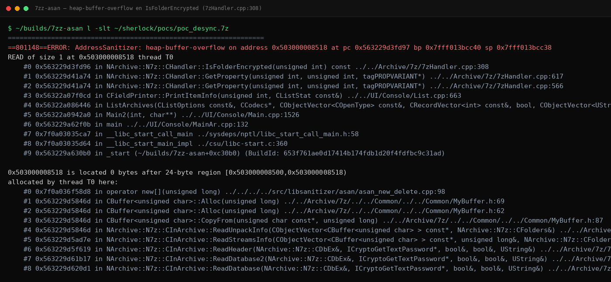

7-Zip: Heap Out-of-Bounds Read en IsFolderEncrypted por Re-parse Divergente de CodersData
Un archivo .7z de 24 bytes manipulados basta para que el binario más instalado del mundo lea memoria que no le pertenece. Este artículo deconstruye un heap out-of-bounds read confirmado en 7-Zip 26.00, 26.01 y 26.02: la función IsFolderEncrypted re-parsea la estructura CodersData con reglas distintas a las que usó el parser original, se desincroniza byte a byte y acaba comparando contra k_AES bytes leídos más allá del final del buffer. Hallazgo del sistema autónomo Sherlock, validado con ASAN + valgrind + gdb en x86 y x64.
/índice_del_análisis +
- Resumen Técnico
- Contexto: Por Qué 7-Zip Importa
- La Superficie: kpidEncrypted y los Comandos Disparadores
- Anatomía del Bug: Dos Parsers, Una Estructura
- El Desync, Byte a Byte
- El PoC: Estructura del Archivo Trampa
- Evidencia de Validación
- Acotación del OOB: Por Qué es LOW
- Impacto Realista y Mitigación
- Conclusión
00. Resumen Técnico
| Objetivo | 7-Zip / 7-Zip ZS — binario CLI 7zz, versiones 26.00 · 26.01 · 26.02 |
|---|---|
| Vulnerabilidad | Heap buffer over-read en NArchive::N7z::CHandler::IsFolderEncrypted (7zHandler.cpp:308) |
| CWE | CWE-125 (Out-of-bounds Read) · VRT: MCR (Memory Corruption — Read) |
| Severidad | LOW — solo lectura, 1–6 bytes controlables, sin camino directo a escritura |
| Disparador | 7zz l -slt archivo.7z y 7zz x archivo.7z (consultan kpidEncrypted) |
| Novedad | Sin CVE asignado y ausente de los advisories GHSL-2026-116…122 (parcheados en 26.01); git diff 26.01..26.02 confirma que 7zHandler.cpp no cambió |
| Validación | ASAN heap-buffer-overflow + valgrind invalid read sobre builds gemelas (instrumentada y producción), x86 y x64 |
| Estado fix upstream | Sin parche al cierre de este análisis — divulgación graduada: mecanismo sí, generador completo no |
01. Contexto: Por Qué 7-Zip Importa
7-Zip está en todas partes: escritorios Windows, gateways antivirus que descomprimen adjuntos, pipelines CI/CD que extraen artefactos, appliances de correo. Cuando un parser de archivos comprimidos lee de más, la pregunta inmediata es ¿quién más lo hace? —porque cada producto que incruste el código afectado hereda el bug. La racha de advisories GHSL-2026-116…122 sobre 7-Zip 26.00 demostró que la superficie sigue siendo fértil; todos esos fueron parcheados en la serie 26.01.
Este hallazgo no está entre ellos. El diff entre 26.01 y 26.02 no toca el handler del formato 7z, y las pruebas confirman que el crash reproduce igual en las tres versiones. Es decir: un bug de clase similar a los ya corregidos, pero en una ruta distinta que nadie había cubierto.
La campaña de fuzzing sobre el formato 7z produjo un crash con firma estable (heap-buffer-overflow READ of size 1 siempre en la misma línea). El triage automático clasificó el stack, la verificación cruzada lo reprodujo en build producción vía valgrind, y el paso de novedad descartó duplicados contra los advisories conocidos. Detalles del pipeline en el artículo central de la serie.
02. La Superficie: kpidEncrypted y los Comandos Disparadores
El bug vive en una consulta de propiedad. Cuando el usuario lista o extrae un archivo, la consola pregunta por cada carpeta interna si está cifrada mediante la propiedad kpidEncrypted. Esa consulta termina invocando a IsFolderEncrypted, que —en vez de reutilizar el resultado estructurado del parseo original— decide volver a caminar los bytes crudos de CodersData buscando el ID del coder AES.
| Comando | Consulta kpidEncrypted | ¿Dispara el OOB? |
|---|---|---|
| 7zz l -slt poc.7z | Sí (listado técnico por ítem) | Sí — crash |
| 7zz x poc.7z | Sí (antes de decidir pedir contraseña) | Sí — crash |
| 7zz t poc.7z | No (el test no consulta cifrado) | No |
Esta asimetría tiene consecuencias prácticas: entornos que solo prueban integridad de archivos (t) no verán el problema, mientras que cualquier flujo que liste o extraiga —exactamente lo que hace un gateway de correo o un gestor de archivos— lo pisa de lleno.
03. Anatomía del Bug: Dos Parsers, Una Estructura
El formato 7z describe cada carpeta con una secuencia de codificadores dentro de CodersData. Cada coder empieza con un byte de flags donde el bit bajo guarda el tamaño del ID (& 0x0F) y el bit 0x20 indica propiedades adicionales. Existe además un flag especial —0x10— que anuncia que detrás del ID vienen dos números: numInStreams y numOutStreams.
El parser principal (CInArchive::ReadFolder, 7zIn.cpp:521) interpreta ese flag correctamente y consume ambos números durante la apertura. Pero IsFolderEncrypted (7zHandler.cpp:291–317) re-parsea la misma región solo con reglas de id+props: nunca mira el bit 0x10. Dos lectores, una misma secuencia de bytes, dos posiciones finales distintas. El resto es aritmética del caos.
El contraste dentro del propio archivo fuente lo confirma: otra función del mismo handler, GetFolderInfo (7zHandler.cpp:400–434), sí procesa el flag 0x10 y consume los dos contadores. El bug no es de diseño del formato: es de implementación inconsistente entre dos lectores de la misma estructura.
04. El Desync, Byte a Byte
Con el archivo trampa del generador, CodersData ocupa exactamente 24 bytes en el heap. Mira cómo el re-parse pierde la pista:
La secuencia exacta del desync queda así:
05. El PoC: Estructura del Archivo Trampa
El generador interno construye un .7z mínimo cuyo header declara una carpeta con el patrón anterior. La clave no es criptografía sino contabilidad de bytes: hay que elegir numInStreams de modo que el skip del re-parse aterrice exactamente en la zona de packStreams, y que el primer byte de esa zona tenga el nibble bajo deseado.
Conservar un baseline limpio junto al disparador fue decisión del sistema: permite demostrar que la única diferencia relevante es el patrón del flag 0x10, eliminando cualquier duda de factores externos (compresión, diccionarios, alineación).
06. Evidencia de Validación
La validación siguió la regla de las dos herramientas. Instrumento primario: build instrumentada con ASAN que reporta el desbordamiento con símbolos. Validador independiente: valgrind Memcheck sobre el binario de producción sin instrumentar, confirmando que el bug no es un artefacto del sanitizer.

Ambas herramientas coinciden en los tres datos que importan: tamaño de lectura (1 byte), línea exacta (308) y distancia al borde del allocation (0 bytes después de 24). Reproducido en builds x86 y x64.
07. Acotación del OOB: Por Qué es LOW
El alcance del desborde está gobernado por el nibble bajo del mainByte falso, y ese byte lo elige el atacante dentro de la zona de packStreams:
| Variante | Configuración | idSize resultante | Bytes OOB |
|---|---|---|---|
| PoC estándar | numIn=10, packStream[0]=0x0A | 10 | 1 byte (ASAN corta en el primero) |
| PoC ampliado | numIn=15, packStream[5]=0x0F | 15 | hasta 6 bytes |
Tres razones lo mantienen en LOW. Primera: es solo lectura —no hay escritura ni corrupción de metadatos del allocator—. Segunda: el dato leído se acumula en id64 y se compara contra la constante k_AES; su único efecto observable es un booleano (¿carpeta cifrada sí/no?), no un leak canalizable a disco o red. Tercera: la distancia máxima (~15 bytes) limita qué objetos vecinos pueden ser alcanzados, y ninguno de los observados altera decisiones de seguridad más allá del booleano citado.
Bajo en impacto, alto en señal: este read es el primitivo de lectura sobre el que el sistema construyó su siguiente hipótesis —control determinista del layout del heap para colocar datos elegibles justo detrás de CodersData—. Esa escalada, documentada internamente como stepping stone hacia MEDIUM, es el tipo de cadena que separa un crash curioso de una vulnerabilidad madura.
08. Impacto Realista y Mitigación
¿Quién está expuesto? Cualquier flujo automatizado que liste o extraiga .7z de origen no confiable: gateways de correo que descomprimen adjuntos para escanear, servidores de archivos con previsualización, pipelines que validan artefactos, y usuarios finales abriendo archivos descargados. En todos esos casos el disparador es pasivo: basta listar el contenido.
Para mantenedores, el fix es quirúrgico: procesar el flag 0x10 en el re-parse —consumir numInStreams/numOutStreams exactamente como hace GetFolderInfo— o, mejor aún, eliminar el re-parse crudo y reutilizar la representación estructurada ya calculada en la apertura. Para operadores, hasta que exista parche: tratar los .7z de origen desconocido como entradas hostiles (aislar el proceso extractor, aplicar timeouts, preferir servicios de descompresión sandboxeados).
Al publicar este análisis no existe patch upstream ni CVE asignado. Por eso el generador completo no se distribuye aquí: el mecanismo está documentado con precisión suficiente para reproducirlo y corregirlo, pero no se sirve listo para disparar. Si eres mantenedor y necesitas el material completo, contacta por los canales habituales.
09. Conclusión
El caso resume lo que hace valioso un LOW bien documentado: una causa raíz clara (dos lectores con reglas divergentes sobre el mismo formato), un mecanismo auditable byte a byte, evidencia triple y una frontera de impacto honestamente acotada. Los bugs de re-parse divergente son una familia —donde hay uno, suele haber más—, y esta firma concreta (flag consumido en un parser, ignorado en otro) ahora forma parte del repertorio que el sistema busca activamente en otros parsers de archivos.
La lección para quien construye parsers: cada vez que una estructura se interpreta dos veces, las dos implementaciones deben compartir la misma gramática —o mejor, la misma función. El formato no cambia; cambia quién lo lee y con cuántas ganas de leer todo.
/Más hallazgos de la serie Sherlock
Siete vulnerabilidades confirmadas en un mes de caza autónoma con modelos locales de IA. Todos los análisis con evidencia y diagramas.
10. Referencias
- 7-Zip — sitio oficial del proyecto
- Documentación del formato 7z (estructura de headers, CodersInfo)
- MITRE CWE-125: Out-of-bounds Read
- AddressSanitizer — detección de errores de memoria
- Valgrind Memcheck
- CERT Vulnerability Rating Taxonomy (VRT)
- Sherlock: Caza Autónoma de Vulnerabilidades con Modelos Locales de IA (tty503.com)
- SAINT GRAIL Go: CRC Bypass en 7-Zip 9.20–25.01 (tty503.com)